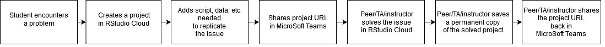
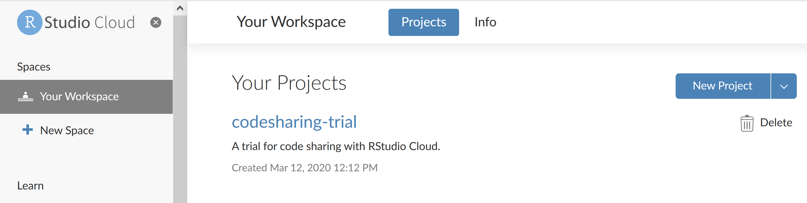
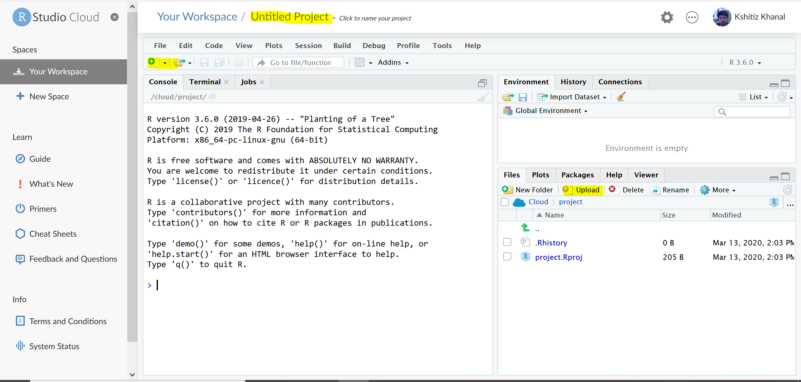
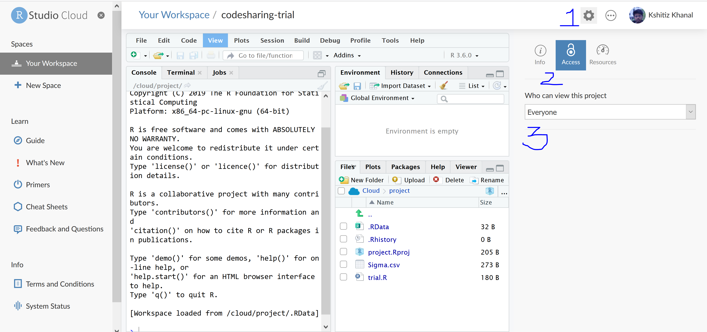
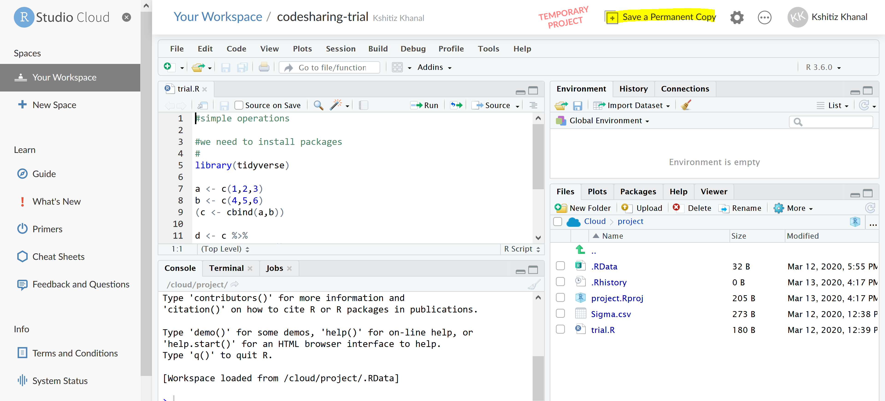
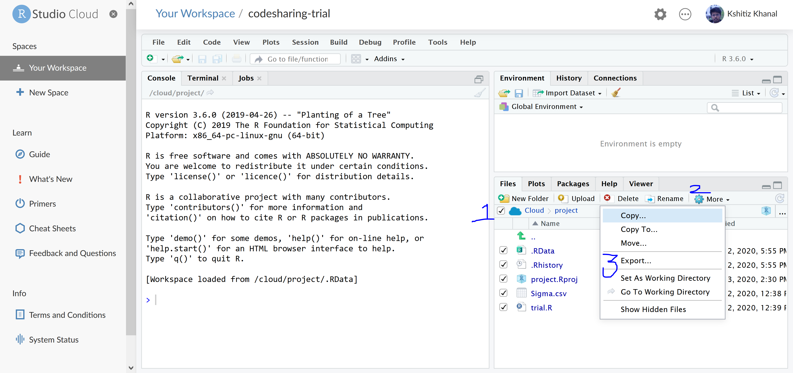

Using Rstudio.cloud for Troubleshooting
Asynchronous Communications and Troubleshooting
We will continue to use Microsoft Teams for asynchronous communication and troubleshooting. Troubleshooting code errors without the cushion of in-person interactions forces us to communicate and act differently. Fortunately, this is an standard practice that has matured a lot in the last two decades. We can follow guidelines like these:
[1] https://stackoverflow.com/help/how-to-ask
[2] https://codereview.stackexchange.com/help/how-to-ask
Using RStudio Cloud
We will use RStudio Cloud for troubleshooting in this course. Think of RStudio Cloud as an instance of RStudio in the cloud where you can share not only your script but also the whole environment. This increases the likelihood that others can replicate your results or troubles.
- First, create an account in https://rstudio.cloud like you would in any other website. Or login using your Github account. Here is the workflow of how this would work.

- Organize your work in Projects. Everything related to a particular exercise (script, data, markdowns, etc.) should be part of one project. To create a project, go to your RStudio Cloud homepage and click New Project.

Start a project
- This opens a RStudio interface in your browser. You can use this familiar interface to rename project, upload files, add new R script and more. See highlighted buttons in the following picture.

The fundamentals
The only caveat with RStudio Cloud is the limited [1 GB] space for each project in the free accounts. Because the datasets we work with are often large, it is probably a good idea to subset the data and post it to the project.
- After adding your scripts and files, you can share the project by sharing its URL. It looks like: https://rstudio.cloud/project/1034476. Before sharing the project, click the gear sign on top-right of your project page, and change Access for Who can view this project to Everyone from the drop-down.

Sharing your project
When you open a project link that your colleagues have shared on Microsoft Teams, it will create a temporary version of the project in your account. No changes made to the temporary version will change the original. After you have a clear solution, save a permanent copy. This will create a new URL that can be shared back.

The 1 GB limit includes the space for the libraries from the Cloud console. In some instance installing libraries from the source (such as dplyr) might require more than 1 GB in memory. There are no easy solutions to that.
In case your space becomes full, download projects that you do not require in the cloud and delete them from your RStudio Cloud account. Check the box left to Cloud, click More and select Export.

Exporting your project